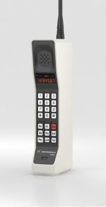
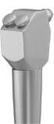
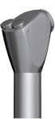
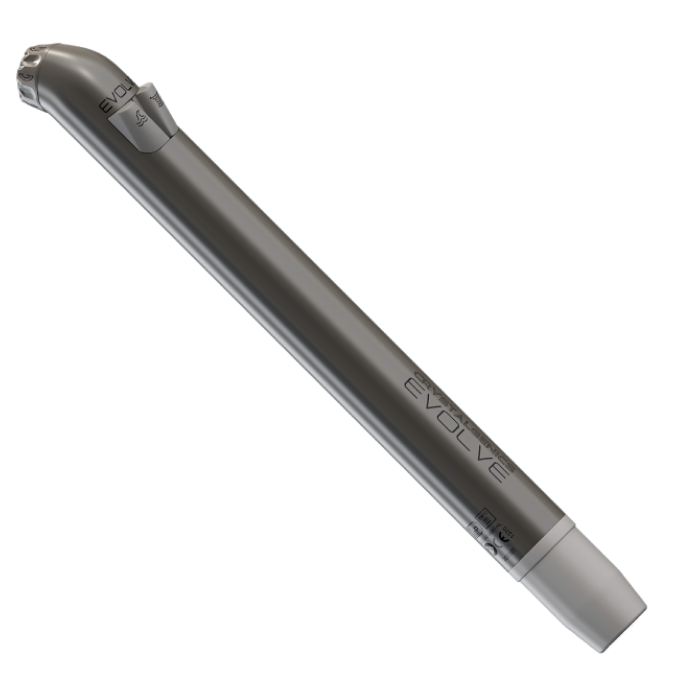
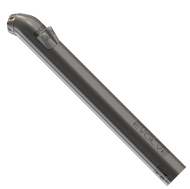
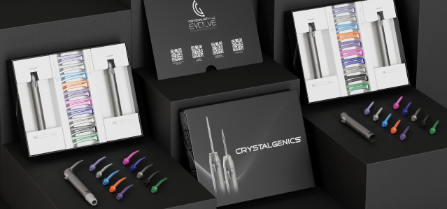

Why take the risk?
For decades, the biggest change to air/water syringes was adding a single-use tip. Current cleaning methods for the air/water syringe is covering your dental syringes in plastic and a quck wipe down with high-level disinfectants. Unfortunately, air/water syringes are never heat-sterilized. Why? The design is outdated. The air/water syringe system is the most used item in the dental practice. Should a patient feel comfortable with a device that is used on every patient and has never been heat-sterilized? Would you?
Public trust in dental health
What if patients were informed of the dangers presented by this high-use, semi-critical dental device? Most air/water syringe systems do not comply with CDC, ADA, FDA, or OSAP recommended device sterilization standards in today's dental office. There are many globally documented cases of cross-infection involving dental offices. These occurrences had enormous impact on patient lives, dental practices, and the communities where they occurred.
Dental Infection Control Updates
Definition
Semi-Critical Device: Instruments such as mirrors and amalgam condensers that do not penetrate soft tissues or bone but contact oral tissues are classified as semi-critical.
Recommendations
Guidelines provided by local and government level agencies to help ensure the dental office is safe for its dental health care providers and patients.
USA
Recommendations
Canada
Recommendations
United Kingdom
Recommendations
Australia
Recommendations
Research Studies
Learn more about the research studies pertaining to reusable versus disposable air/water syringe tips.
-
Dental Advisor: Reusable versus Disposable Air/Water Syringe Tips
Number 13 - June 2012
-
Baylor College of Dentistry: Rationale of using single-use disposable air/water syringe tips
Feb;21(2):176
-
Australian Dental Journal: Efficacy of air/water syringe tip sterilization
2014; 59: 87-92
-
Quintessence International: The air-water syringe: contamination and disinfection
1989: 20; 912-916
Time to upgrade
The same air/water syringes that have been used for over 30 years are still being used today. The CDC, ADA, FDA and OSAP all recommend that this semi critical device should be removed between patients to be heat-sterilized. The problem is, once installed, current air/water syringes are never removed to be heat-sterilized. This makes the air/water syringe non-compliant with leading health authorities.
1988
-

In 1988, this is what your cell phone and air/water syringe looked like.
2020
Over the last 32 years, your cell phone made drastic improvements. In that same time your air/water syringe never changed.
- 
- 
- 
The One and Only Total Solution
CrystalGenics Evolve was designed with the purpose of resolving key infection control issues.
Learn MoreMake the Switch
It’s time for change. Replace your air/water syringes with those that meet current guidelines & patient safety demands.